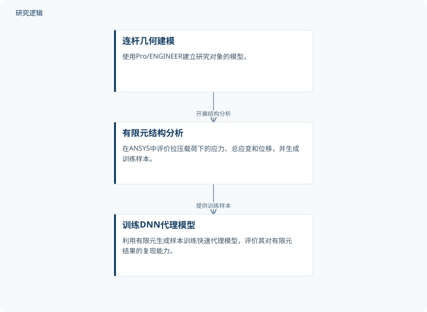

摘要解读
量子增强与机器学习框架用于连杆高精度疲劳寿命预测及结构分析
Quantum-Enhanced and Machine Learning Framework for High-Accuracy Fatigue Life Prediction and Structural Analysis of Connecting Rod
解读更新 2026-10-17 14:34 · 依据公开摘要整理，未核验全文细节
连杆选材既要回应功率重量比需求，也要守住疲劳安全边界。这项研究将有限元分析、神经网络代理与量子启发优化结合，用于发动机连杆的材料筛选；阅读重点是预测精度与疲劳判据如何共同支持选材。
文章目录
连杆选材：功率重量比之外还要看疲劳
连杆将活塞的往复运动传递为曲轴的旋转运动，传统材料包括铝合金、钛合金和合金钢。面向更高功率重量比的需求，研究以110 cc四冲程汽油发动机连杆为对象，提出多层优化框架，寻找适合的材料。这里的任务不只是比较结构响应，还涉及成本与性能的权衡以及疲劳寿命评价。
有限元生成数据，代理模型参与材料筛选
研究使用Pro/ENGINEER建立连杆模型，在ANSYS中进行高保真有限元分析，评价拉伸与压缩载荷下的von Mises应力、总应变和位移。随后，以1,500个有限元生成样本训练深度神经网络（DNN），作为快速代理模型，并使用Takagi–Sugeno模糊推理系统进行多准则材料排序。
优化层采用量子近似优化算法（QAOA），在IBM Qiskit Aer状态向量模拟器上运行，搜索涉及候选合金及成本性能比的多维设计空间。这里的量子启发优化是在模拟器上执行，并非摘要所报告的量子硬件实验。疲劳评价则结合Basquin应力—寿命关系、Goodman平均应力修正与Miner线性损伤累积准则。
依据摘要整理的建模与代理学习环节


仅展示摘要明确陈述的几何建模、有限元分析与代理训练关系，不代表完整优化流程，也不是论文原图。
下载 SVG图示关系说明
实线表示相邻阶段的信息流，虚线表示跨阶段联系或反馈。
连杆几何建模 → 有限元结构分析：开展结构分析；有限元结构分析 → 训练DNN代理模型：提供训练样本
应力预测贴近有限元，疲劳评价推荐42CrMo4
摘要报告，DNN应力预测的R2 = 0.987、RMSE = 2.41 MPa、MAPE = 0.71%，表现优于随机森林和XGBoost基线。这些指标描述的是代理模型对有限元结果的复现能力，不应直接理解为对实物服役应力或寿命的验证精度。
疲劳评估显示，AA-7075的工作应力超过其疲劳极限，疲劳安全系数为0.78；42CrMo4合金钢的疲劳安全系数为1.97，被评为具有无限寿命表现，因此获得推荐。“无限寿命”应放在本研究的疲劳计算条件下理解，不能扩展为所有工况下均不会发生疲劳失效。
摘要尚不能交代泛化范围与优化增益来源
当前依据仅为摘要，无法判断有限元样本的参数覆盖、训练与测试划分、边界条件及载荷谱，也无法确认是否进行了实物疲劳验证。摘要虽报告DNN优于基线，却未给出基线指标、比较配置或不确定性范围；对于量子启发层的独立贡献、计算成本及材料推荐的适用边界，同样需要进一步阅读原文。这些是当前资料的边界，不代表论文没有开展相关工作。
阅读启发：区分代理精度与疲劳可靠性证据
阅读启发：面向结构疲劳与可靠性，值得继续追问代理模型的误差如何影响材料排序，以及疲劳安全系数对载荷和材料参数的依赖。若联系智能运维，还需先厘清设计阶段的寿命计算与服役状态下的寿命预测有何差别，不能把本文的仿真代理精度直接视为在线预测维护能力。
以上为本站阅读启发与建议，不是论文已验证的结论。